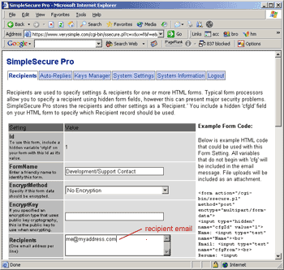

SimpleSecure: Testing
SimpleSecure: Testing
 To test that SimpleSecure is working, you need to create a recipient record and then send yourself a test message.
For full details on Recipient Records and how they work, refer to the usage instructions.
Step One: Edit The Test Recipient
Edit the "Test Form" recipient record. Scroll down to the "Recipients" field and replace the dummy email address with your own real address.
In the "From" field, replace the dummy address with the address of your choice.
Click "Update" to update the recipient record. Now, any form with cfgId=1 will be sent to you.
Step Two: Submit a Test Form
The fastest way to test SimpleSecure without creating a dummy form is to manually enter some test data in the brower Address Bar. Anything that includes cfgId=1 in the querystring will work. The following is a recommendation:
http://www.YOURDOMAIN.com/cgi-bin/ssecure/ssecure.pl?cfgId=1&Message=Test+Message
If everything is working correctly, you should see the message "Thank you. Your information has been submitted." Check your email at this time. You should receive a message from the server.
You may also use a test form like the one below. (you will probably need to update the action tag to point to the correct location on your server.)
NOTE: Many spam filters will intercept automated email messages. Because all formmail messages are, by their nature, an automated message, your spam filter may block the message. If you do not receive the SimpleSecure test message within a few moments, check that it did not get filtered. To workaround this problem, you may need to specify the "From" address of the recipient record as an email address that is on your spam filter whitelist.
Refer to the troubleshooting page if you have any problems with the install...
© copyright 1997-2004, verysimple, inc.